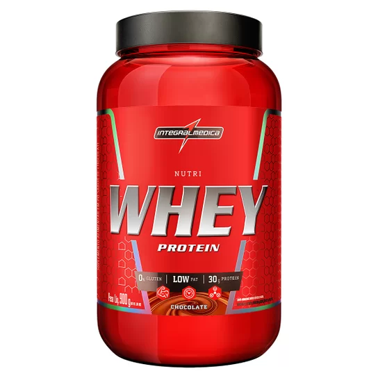
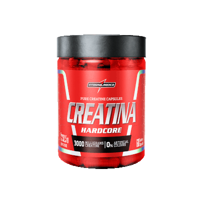

Estudo recente destaca os benefícios da Creatina na musculação
Um novo estudo publicado no "Journal of Sports Science & Medicine" sugere que a suplementação com creatina pode proporcionar benefícios significativos para praticantes de musculação. Pesquisadores da Universidade ABC conduziram uma análise abrangente, observando um grupo de atletas que consumiram creatina regularmente durante um período de seis semanas. Os resultados revelaram um aumento notável na força muscular, desempenho em exercícios de alta intensidade e uma aceleração na recuperação pós-treino, solidificando ainda mais a reputação da creatina como um suplemento eficaz para entusiastas de musculação.